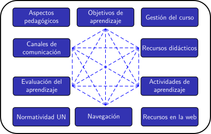
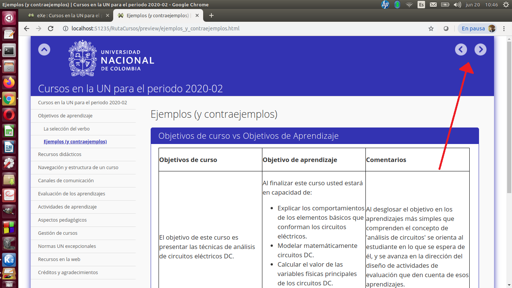
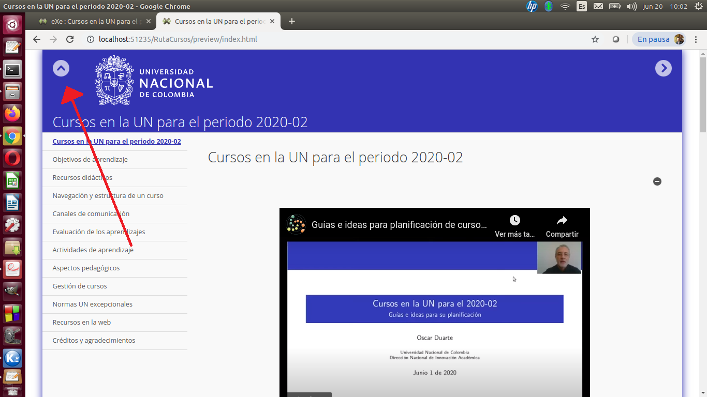
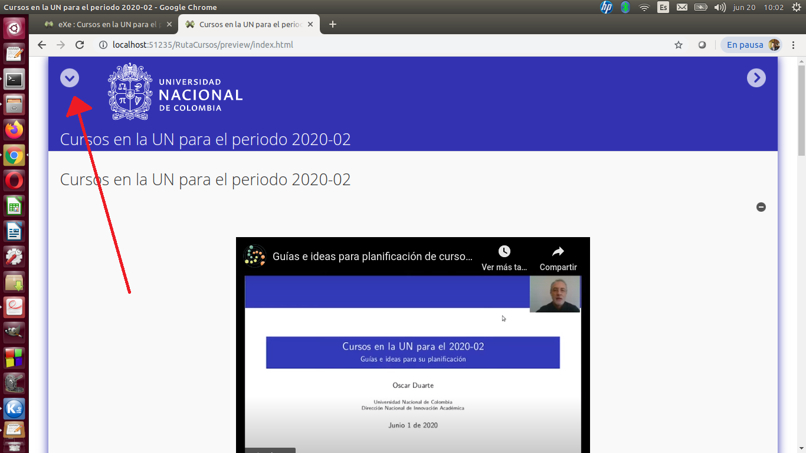
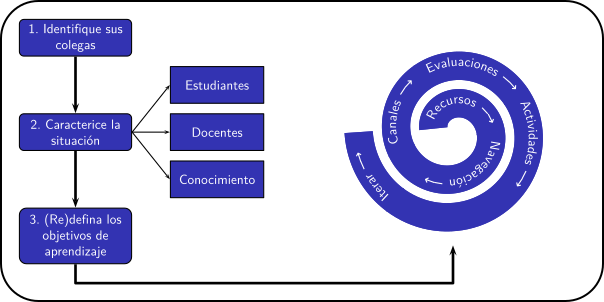

Planificación de clases remotas en la UNAL (periodo 2020-02)
Planificación de clases remotas en la UNAL (periodo 2020-02)
Objetivos de aprendizaje
Al finalizar este curso, gracias a su esfuerzo usted estará en capacidad de:
- Explicar los aspectos más relevantes del enfoque pedagógico centrado en el aprendizaje del estudiante.
- Identificar los elementos que se deben considerar para la estructuración y planificacion de un curso formulado para estudiantes de la Universidad Nacional de Colombia en las condiciones esperadas para el periodo académico 2020-02.
- Seleccionar y adaptar los elementos del diseño de cursos virtuales que le sean útiles para la estructuración y planificación de cursos presenciales, virtuales o híbridos.
- Seleccionar las herramientas tecnológicas adecuadas a su situación para el uso de Recursos Educativos Digitales.
¿Cómo navegar en este curso?
Explore libremente el contenido de este curso. Los contenidos están interconectados y puede llegar a ellos por más de una vía. El contenido se ha organizado en 10 módulos principales, representados por la siguiente figura:

Al inicio de cada sección encontrará una imagen en la que se destaca el módulo al que pertenece.
Si desea realizar una navegación secuencial, puede usar las flechas de "página siguiente" y "página anterior":

También puede usar el menú de la izquierda para ver la "Tabla de Contenido" del curso, el Menú. Sin embargo, quizás prefiera ocultarlo para aprovechar mejor el espacio de la pantalla:
| Menú desplegado | Menú oculto |
|  |  |
Sobre la participación en las actividades del curso
Este es un curso diseñado para que cada quien lo tome a su ritmo y según sus intereses y necesidades. No genera ningún tipo de certificado. En ese sentido, supone que quien lo toma (total o parcialmente) tiene una motivación para ello y regulará su propio aprendizaje.
El contenido del curso es abierto. Sin embargo, hemos preparado un foro de debate exclusivo para la comunidad de la Universidad Nacional de Colombia. Este foro es parte integral (no accesoria) del diseño didáctico del curso. Hemos incorporado bastantes preguntas de reflexión, y esperamos que las respuestas nutran los debates del foro.
Por lo anterior, nos permitimos hacer las siguientes recomendaciones a los docentes de la Universidad Nacional de Colombia:
- Participe en el foro. No se conforme con acceder a los contenidos. Antes de seguir leyendo estas líneas, visite la página del foro y matricúlese siguiendo el procedimiento que allí se explica.
- Comente con otros profesores los aprendizajes de este curso y las ideas que tenga sobre sus asignaturas del próximo semestre.
- Converse con sus estudiantes sobre la forma en que ellos vivieron sus aprendizajes en el semestre 2020-01. Pregúnteles acerca de las dificultades, retos y éxitos. Pregúnteles también qué aspectos del curso podrían cambiarse.
- Envíenos sus sugerencias de mejora a este curso al correo de la DNIA: yacorrealesm@unal.edu.co
Se requiere un correo electrónico del dominio unal.edu.co
Ruta sugerida para la planificación y construcción de un curso
Unas notas sobre la ruta sugerida
La ruta sugerida en el video de arriba ↑ se resume en la siguiente figura

Esa es nuestra sugerencia para abordar el reto de planificar las asignaturas del semestre 2020-02. No es nuestra sugerencia para diseñar un curso virtual.
Hay varios aspectos importantes para hacer esta diferenciación:
- Un curso virtual suele estar diseñado para el autoaprendizaje, como este que usted está tomando. Las asignaturas del 2020-02 no serán así, porque usted, como profesor, guiará el aprendizaje.
- El diseño de un curso virtual requiere mucho más tiempo del que disponemos para planificar las asignaturas del 2020-02. A manera de ejemplo, los expertos de Coursera, una plataforma de cursos virtuales, estiman que el diseño de un curso de 20 horas de trabajo del estudiante (¡Menos de medio de crédito académico!) requiere unas 300 horas de trabajo por parte de un equipo de desarrollo que puede incluir expertos temáticos, diseñadores instruccionales, diseñadores gráficos, programadores, etc.
- Las modelos sugeridos para el diseño de cursos virtuales implican varias fases que, simplemente, no tenemos tiempo para implementar completamente antes del inicio del periodo 2020-02. Un ejemplo muy popular es el modelo Addie, en el que se proponen 5 fases.
La ruta que aquí sugerimos es una variante del backwards design. La principal diferencia incorporada es la sugerencia de realizar una búsqueda de recursos disponibles en la red, justo después de abordar los objetivos de aprendizaje. ¿Por qué? Porque no tenemos tiempo para desarrollar nuestros propios recursos didácticos. En ese sentido, la sugerencia consiste en adecuar el diseño de la asignatura a los recursos que encontremos, lo que se aleja sustancialmente de las recomendaciones usuales, según las cuales los recursos deben ser nuestra preocupación final, y deberían desarrollarse para apoyar los otros aspectos del diseño del curso. Si tuviésemos mas tiempo, esa también sería nuestra sugerencia.
Tras bambalinas
Este curso es fruto de la colaboración de muchas personas e instancias de la Universidad Nacional de Colombia.
Es un curso de profesores para profesores, inspirado en los principios y fines de nuestra Universidad, plasmados y desarrollados en el Plan Global de Desarrollo vigente. Cuando se redactó ese plan, nadie contemplaba una situación como la que estamos viviendo, que nos ha llevado a trasladar la docencia al escenario remoto. El propósito principal de este curso es ayudar a desarrollar esos principios en este nuevo entorno.
En este curso usted encontrará más preguntas que respuestas. Queremos que usted conozca algunos aspectos de la educación virtual, para que enriquezca los criterios que habrá de emplear a la hora de estructurar las asignaturas del periodo académico 2020-02. ¿y qué mejor forma que tomando el rol de estudiante de un curso virtual?
Este curso no es sobre tecnología aplicada a la educación. Es un curso sobre educación mediada por la tecnología. Los dos elementos, educación y tecnología, están imbricados en todos los módulos, pero la prelación la tiene la educación. Por esa razón, esperamos que los aprendizajes que aquí se puedan alcanzar trasciendan la coyuntura de la actual pandemia y nos ayude a impulsar el cambio pedagógico que requiere el sector educativo.
Oscar Duarte
Obra publicada con Licencia Creative Commons Reconocimiento Compartir igual 4.0